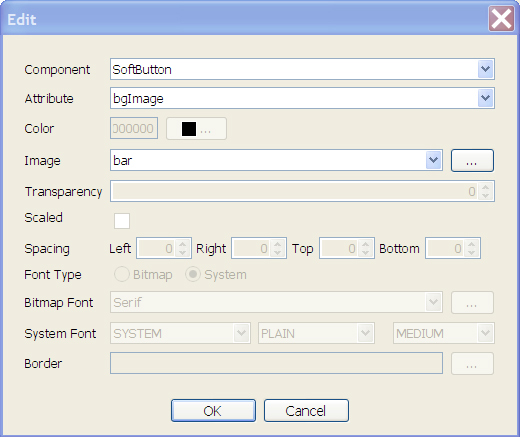

| LWUIT Developer’s Guide |
| C H A P T E R 11 |
LWUIT permits the following resource elements:
Resources can be delivered as a bundle (a binary file that can be loaded and used on the device). A bundle can combine several different resource types within a single file, thereby easing distribution and improving compression. LWUIT supports two methods for creating a resource bundle: a set of Ant tasks, or the graphical Theme Creator utility (see The LWUIT Theme Creator).
The following sections detail the five resource types and the ways in which they relate to the resource bundle mechanism.
A resource bundle can be built using Ant during the standard application build process. Resource files convert existing files into bundles as necessary. An application can have any number of resource files.
A resource file it is loaded fully into memory (due to Java ME IO constraints), so you should group resources based on the needs of the application flow. This allows the application to load only the necessary resources for a given form or use case and leaves memory free for additional resources needed by other forms or use cases.
To create a resource, use code similar to the following example in your build file:
<taskdef classpath="editor.jar" classname="com.sun.lwuit.tools.resourcebuilder.LWUITTask" name="build" /> <build dest="src/myresourceFile .res"> <image file="images/myImage.png" name=”imageName” /> </build>
You can add several additional types of resources to the build tag. These optional resource tags are explained in the remainder of this chapter.
There are several types of images in LWUIT, most of which can be stored either individually in the Java archive (JAR™) or packaged as part of a resource bundle.
To load an image stored in the JAR file, use the following code:
Image image = Image.createImage("/images/duke.png");
The Image tag supports the following attributes:
name |
The name of the resource (defaults to the name of the file name). |
file |
The file that would be used for the image (required) |
indexed |
True or false. whether to store a indexed image. Defaults to False (see Indexed Images below). |
Once loaded, the image is ready to be used as a background image of a component or even as an icon for a component that can contain an image.
To package an image in the resource bundle, use the code sample described in Indexed Images.
Images can occupy a great deal of memory in runtime. For example, a background image scaled to a phone with 320x240 resolution with 1.6 million colors would take up 320x240x4 bytes (307200 bytes = 300 kilobytes)!
Some devices have barely 2mb of RAM allocated to Java, yet feature high resolutions and color depths, leaving very little space in which the application can function. Indexed images work on the tried and true concept of using a palette to draw. Rather than store the image as a set of Alpha, Red, Green, Blue (ARGB) values, the indexed image relies on the notion that there are no more than 256 colors in an image (if there are more, the Ant task tries to gracefully reduce the color count, resulting in lost details). An image with 256 colors or less can be represented using an array of bytes and an array of integers (no bigger that 256x4=1kb) thus saving approximately 70 percent of the RAM required for the image!
For example, assuming the image mentioned above uses all 256 colors, the memory occupied is 320x240+1024 (77824 bytes = 76kb), or a savings of 74.7 percent! The memory savings are significant, and especially welcome on low‐end devices.
The downsides to using a index image are as follows:
They are slower to render on the screen since they require a lookup for every pixel. This is noticeable when rendering complex elements, but on modern devices (even weak devices) it isn't obvious.
Resource bundles must be used to store indexed images because there is no standard format for indexed images supported across all Java ME devices.
Converting an image in runtime to a indexed image can be very slow and can fail (if there are too many colors), which is why it is beneficial to choose indexed images during the build phase.
Because indexed images aren't compressed the resource file appears larger (and the space taken on the device is larger), however, in practice the indexed images compress very well in the JAR and in fact take less space than the equivalent PNG image after compression.
You can read more in the IndexedImage API documentation. Since indexed images are derivatives of the Image class they can be replaced in place with reasonable compatibility.
Notice that indexed images are immutable and can't be modified after they are created, so methods such as getGraphics() do not work correctly. Consult the API documentation to verify the appropriate functionality.
The LWUIT library supports bitmap fonts, system fonts, and loadable fonts. System fonts use basic native fonts and are based on the common MIDP fonts. For more detailed information please see the Font API in the API documentation located in install‐dir/docs/api/lwuit.
Bitmap fonts generate fonts on the desktop as image files. These image can be used to draw desktop quality fonts on a device without requiring specific support from the device.
Loadable fonts support specifying a font as a name or even as a TrueType font file, if the underlying operating system supports such fonts, the font object would be created.
All fonts can be used in a theme file and are represented using the Font class in LWUIT.
Three basic parameters define a system font:
| Face | Valid values are FACE_SYSTEM, FACE_PROPORTIONAL and FACE_MONOSPACE. |
| Valid values are STYLE_PLAIN, STYLE_ITALIC, STYLE_BOLD. | |
| Valid values are SIZE_SMALL, SIZE_MEDIUM, SIZE_LARGE. |
To create a system font, use the following code:
Font.createSystemFont(Font.FACE_SYSTEM, Font.STYLE_BOLD, Font.SIZE_MEDIUM);
To create a bold italic font style use code similar to the following:
Font.createSystemFont(Font.FACE_SYSTEM, Font.STYLE_BOLD | Font.STYLE_ITALIC, Font.SIZE_MEDIUM);
Different platforms have different font support, e.g. phones usually only support system and bitmap fonts while TV's usually support TrueType fonts but don't work well with bitmap fonts. LWUIT has support for defining fonts in resources that allow a resource to adapt for different devices. To support portability LWUIT allows specifying a loadable font if such a font is supported by the underlying system and allows bundling bitmaps for increased portability. As a fallback a system font is always defined, thus if the native font isn't supported or a developer isn't interested in using a bitmap font the system font fallback can always be used. It is possible to define such a font using the Ant task with the following syntax:
<build dest="src/myresourceFile.res"> <font logicalName=”SansSerif” name=”myFont” size=”20” /> </build>
The following attributes are supported for the font Ant task:
name |
Name of the font to load from the resource file (optional: defaults to logical name or file name). |
charset |
Defaults to the English alphabet, numbers and common signs. Should contain a list of all characters that are supported by a font. For example, if a font is always used for uppercase letters then it would save space to define the charset as: "ABCDEFGHIJKLMNOPQRSTUVWXYZ" |
src |
Font file in the case of using a file. Defaults to TrueType font. size floating point size of the font. |
bold |
Defaults to False. Indicates whether the font should be bold. |
trueType |
Defaults to True, relevant only when src is used. If set to False, type 1 fonts are assumed. |
antiAliasing |
Defaults to True. If false, fonts are aliased. |
logicalName |
The logical name of the font as specified by java.awt.Font in Java SE: Dialog, DialogInput, Monospaced, Serif, or SansSerif. |
createBitmap |
Defaults to True. If false no bitmap version of the font is created. |
Resource bundles support localization resources, allowing the developer to store key‐value pairs within the resource file. The localization bundles use the format of Java property files, which only support USASCII characters. To enter characters in a different script, either use a special editor (such as NetBeans) or use the native2ascii JDK tool with the Ant task to convert the file.
To create a resource bundle use the following code
<build dest="src/myresourceFile.res"> <l10n name="localize"> <locale name="en" file="l10n/localize.properties" /> <locale name="iw" file="l10n/localize_iw_IL.properties" /> </l10n> </build>
To load the localization resource use the following syntax:
Hashtable h = bundle.getL10N("localize", "en");
The hashtable contains the key value pairs of the resources within the bundle allowing for easy localization. LWUIT supports automatic localization through the UIManager.setResourceBundle(Hashtable) method. This installs a global resource bundle which is “checked” whenever a localizable resource is created, thus allowing for the replacement of the entire UI language without querying the resource bundle manually.
This section discusses how themes work as resources. See Chapter 8 and Chapter 10 to both of these chapters in-depth discussions of styles and theming in LWUIT.
A theme can be defined using a key value properties file containing selectors and values. A selector can be defined as an attribute value, optionally with a component name prepended to it for narrowing the selection further.
The value of an entry in the theme depends on the type of the entry, some entries such as bgImage expect an image object and some entries such as Font expect a font definition. Most entries just expect numbers. For example, this is a typical snippet from a theme:
sel#fgColor= 0017ff font= systemSmall Form.bgImage=myBackground Form.font=Serif SoftButton.bgColor= ff SoftButton.fgColor= ffffff
To add this theme into a resource, add the following:
<build dest="src/myresourceFile .res"> <font logicalName="Serif" bold="true" /> <font createBitmap="false" name="systemSmall" system="FACE_SYSTEM ; STYLE_PLAIN; SIZE_SMALL" /> <image file="images/background.png" name="myBackground" pack="true" /> <theme file="themes/myTheme.conf" name="myTheme" /> </build>
This theme can then be installed as follows:
UIManager.getInstance().setThemeProps(res.getTheme(myTheme));
The Theme Creator is a standalone GUI tool that allows UI experts, developers, and translators to open, create, and edit resource packages for LWUIT. The Theme Creator was designed for visual work and provides “live” preview of all UI changes, enabling rapid UI customization.
Currently the Theme Creator and the Ant tasks accomplish the same thing, with one limitation. In the Theme Creator all bitmap fonts used by the theme must be defined within the theme itself. A theme cannot reference a bitmap font defined in a different resource file.
The Theme Creator supports the six resource types described in Resource Elements.
To use the tool, launch the Theme Creator application from your LWUIT distribution.
To add a resource, click the + button in the tab representing the element type you wish to add and specify a name for the resource. Specify a name for the resource. The new resource is added under the appropriate tab.button in the tab representing the element type you wish to add and specify a name for the resource. Specify a name for the resource. The new resource is added under the appropriate tab.

To create a new theme, select the Theme node, then click the + button. Note that a resource bundle can contain more than one theme.
Note - The live preview is displayed for themes only and represents the behavior of the theme alone. It doesn’t contain the other resources in the file that do not relate to the theme. |
Images and animations can be used either by a theme or by the LWUIT application. The Theme Creator supports images (JPEG, PNG) and animated GIFs. The image and animations can be replaced using the ... button.
Standard images can also be indexed. An indexed image takes less space in the final application and occupies less memory space, however, it takes longer to draw and supports up to 256 colors. When you click the Indexed image radio button, the number of colors is verified. If more than 256 colors are present the application offers to try to reduce that number (with quality implications). It is a good practice to use an image editing tool to index images before including them.
Note that an Alpha channel (beyond full transparency) might be somewhat problematic with indexed images.
The Theme Creator can use device specific fonts or create bitmap fonts for the devices from any font installed in your desktop operating system. FIGURE 11-3 shows the font editing dialog that appears when adding a new font to the resource file.
To create a bitmap font, the "Create Bitmap" checkbox must be enabled. make sure to specify the characters you need from the font (defaults to upper and lower case English with numbers and symbols). Notice that the more characters you pick in the character set, the more RAM the font will consume on the device. Anti-aliasing is built in to the bitmap font. When running under Java 5 the Theme Creator has two anti-aliasing options: Off indicates no anti-aliasing in the bitmap font, and Simple indicates standard anti-aliasing.
A localization resource can be edited by assigning key/value pairs to use within the application. A key can be mapped to a resource name in any locale.
The editor allows you to add or remove locales listed in the combo box above and appropriately edit the locale entries in the table below. To add or remove a locale property use the buttons on the bottom of the screen.
To modify a theme resource, set the selectors and the theme resources to appropriate values to produce an attractive UI. When creating a new theme you see a UI containing the table of selectors and resources (for more in depth details of themes for developers, see Chapter 10).
To modify the theme, choose a selector on the left side and click the Edit button. You can add new selectors using the Add button in the theme. To modify an existing selector, select it in the table and double click or press the Edit button.
This section describes how to add a new theme using the Theme Creator.
Use the + button to add a new theme and select it in the tab.
Click the Add button within the theme area (Add Entry) and select bgColor for the attribute.
Click the Add button again and select SoftButton in the Components combo box.
Because black over blue is unreadable, add another entry for SoftButton.
The title looks small and insignificant. You might add a Title fgColor and set it to red, but that’s not quite enough.
Click on add and select the Title component and the font attribute
In the Font Type row, click Bitmap. The Bitmap font dropdown is enabled.
In the Bitmap Font row, click ... to add a new font. FIGURE 11-3 shows a system font selected.
You can gain deeper understanding of the selector concept from Chapter 8 and Chapter 10.
Another way to learn about themes is by experimentation. When you check the Live Highlighting box (as shown in FIGURE 11-6) and select a table entry, the relevant property “blinks” on the screen. This allows you to investigate what theme aspects affect the application, with some minor caveats: a property might affect a different form in the application, otherwise, it might be hard to notice its effect.
You can modify and add theme properties very easily using the Edit dialog (FIGURE 11-7). This dialog allows you to specify the component type (or no component for a global or default property) and the attribute that you wish to modify. As you make changes in this dialog the preview is updated. Click OK to make the changes made to the preview permanent.
This dialog abstracts most of the complexity related to the different attribute types. For example, the font attribute only allows setting a bitmap or system font while a bgImage attribute only allows selecting or adding an image.
Data is generally designed for developers and shouldn't be used by designers.
An arbitrary file can be placed within this section and it can be accessed by developers in runtime. This section has no effect on the rest of the functionality even if the data file is an image or font.
The preview showing the LWUIT Demo allows for easy customization of a MIDlet which is not necessarily limited to the LWUIT Demo. The Theme Creator supports plugging in your own MIDlet so you can test your theme on the fly.
To install your own MIDlet into the Theme Creator preview panel, use the MIDlet > Pick MIDlet menu and select the JAR file for your own MIDlet.
There are, however, several restrictions and limitations in this feature. Since the MIDlet will be executed in Java SE it can't leverage javax.microedition APIs. While the APIs are present they are implemented in stub form. For example, if you use RMS, GCF, and so forth, they will return null for all queries and do nothing in all operations. Additionally, invoking features such as theming won't work.
If there is a failure in the MIDlet the Theme Creator will silently load the LWUIT Demo in the preview and use it instead. To debug the failure, execute the Theme Creator from command line using java -jar ResourceEditor.jar. When entering the theme option you can see the stack trace of the exception that caused the failure.
There is currently a known issue in some operating systems which causes the Theme Creator to fail in some cases when using the Aero theme. This issue stems from Java SE's look and feel implementation and the only workaround is to change the application look and feel using the Look And Feel menu option.
| LWUIT Developer’s Guide | 12-11-09 |
Copyright © 2009, Sun Microsystems, Inc. All rights reserved.